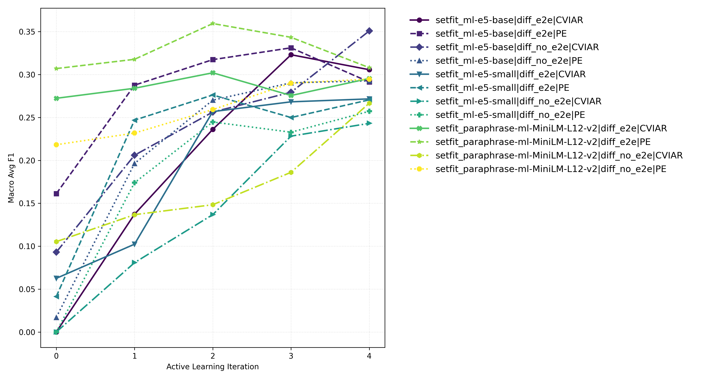
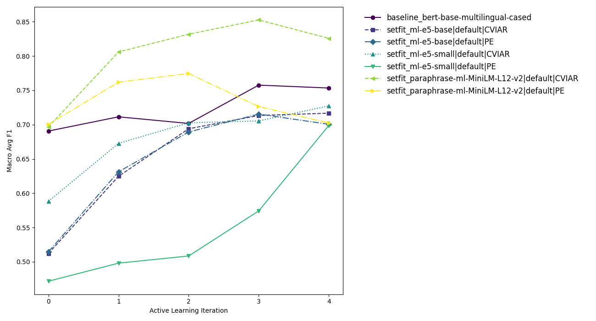
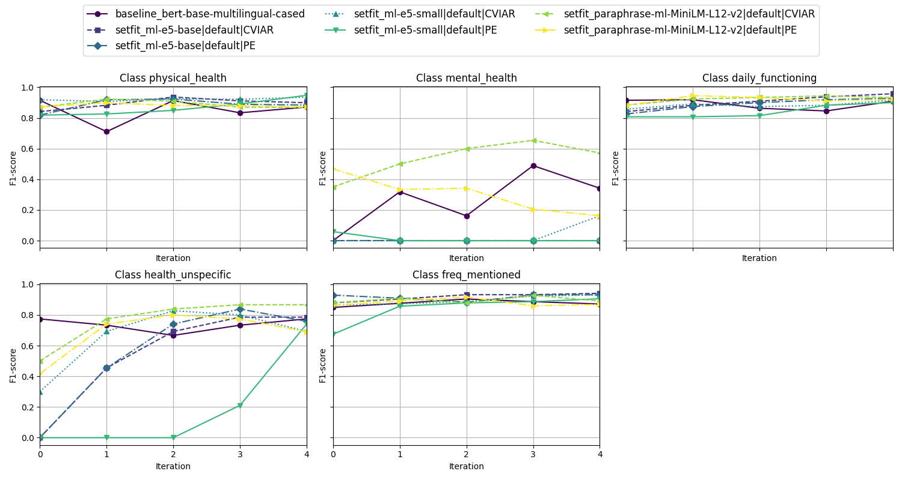
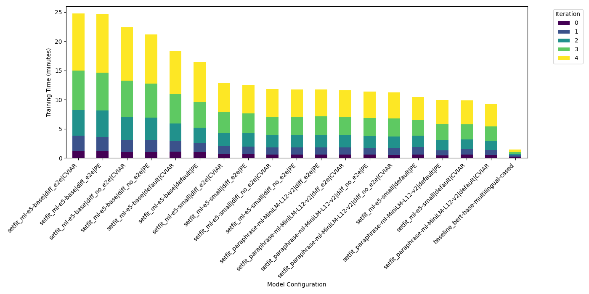

Evaluating Active Learning Setups for Qualitative Interview Coding
Background
After completing our preliminary work on transcription, we can now shift focus to the next task: coding our interviews. The aim is to assign labels to interview segments that reflect our dimensions of interest. To align our methodological approach with the needs of our sociological researchers, we decided to use active learning for the labeling process.
Active learning enables human intervention during coding while simultaneously training a machine learning model. Over time, this model can support – and potentially partially automate – the coding process. In this short research notice, we present our findings on different active learning configurations and explain how we identified a suitable setup for our use case.
Test Setting
Active learning refers to an iterative learning setup in which an ML model is trained repeatedly. In each iteration, annotators label examples that are expected to be particularly informative for deciding whether a given label should be assigned. The model is then retrained, and a new batch of examples is selected. The overarching goal is to minimize the total number of labeled examples required.
We implemented our experiments using the small-text active learning framework in Python, which offers a wide range of configuration options.
Data, Annotation, and Evaluation Strategy
Before involving expert coders in annotating the final interview data, we conducted experiments on synthetic interviews to establish baseline practices. These interviews were generated in an AI-to-AI interview setting, where roles, socio-demographic characteristics, and interview guidelines were provided as context.1
From these interviews, we constructed training and test splits. For coding, we selected a small subset of codes that had already been used in a previous study by our team Kroh u. a. (2023).
During data preparation, it became clear that inter-coder agreement would be a central concern for evaluating model performance. A key question is whether a model trained on data labeled by one coder can be meaningfully evaluated on data labeled by another, especially if their interpretations of the codes differ. Even within annotations produced by the same coder, consistency cannot be taken for granted: perceptions of concepts may evolve during the labeling process, and subtle textual differences can lead to different label assignments.
To allow for later analysis of these effects, we tracked which coder labeled each example. For the experiments reported here, we restricted evaluation to a smaller subset of the test data annotated by a single coder, providing a more stable reference point.
Model Architecture and Active Learning Configuration
Turning to the technical setup, our task involves extracting nuanced information from natural language, making transformer-based models a natural choice. Within small-text, two transformer-based approaches are available: a token-level transformer integration (TransformerBasedClassificationFactory) and sentence transformers trained using the SetFit paradigm (SetFitClassificationFactory).
Our experiments focus on sentence transformers, as prior work suggests they outperform the token-based approach in low-data scenarios Tunstall u. a. (2022). Nevertheless, we included one standard transformer model for comparison. Since each interview segment may receive multiple codes, the task is formulated as a multi-label classification problem.
In addition to text representation, several configuration choices can influence model performance. Each model requires a classification head to map embeddings to label predictions. The default option is a logistic regression head implemented in sklearn. As an alternative, we evaluated a differentiable classification head implemented as a linear layer in torch. This option allows for end-to-end training of both the embedding model and the classifier and would later enable the computation of integrated gradients for token-level attribution scores.
For the differentiable head, we tested both full end-to-end training and a setup where embeddings were kept fixed and only the head was trained. Finally, we varied the query strategy that determines which samples are selected for annotation. We compared a prediction-entropy (PE) baseline with the more suitable CategoryVectorInconsistencyAndRanking (CVIAR) strategy, which is designed specifically for multi-label scenarios.
For each configuration, we simulated an active learning run by initializing the model with 20 labeled examples, followed by five iterations in which 25 additional examples were annotated. This resulted in 145 labeled samples per run. The total labeled data pool contained 210 examples, with each configuration selecting different subsets depending on model and query strategy.
We used MLflow to log model configurations, evaluation metrics, training times, and sample selection across iterations. All experiments were run on a SLURM cluster using four Tesla A100 GPUs with 32 GB of memory each, although substantially fewer resources are sufficient when running active learning in a fixed configuration.
Results
A clear pattern emerges from the results: configurations using a differentiable classification head perform substantially worse than those using a logistic regression head. This is most likely due to the small number of training examples available. Since such low-data conditions are typical in qualitative coding tasks, this finding suggests that differentiable heads are not well suited for our intended application.
Figure 1 summarizes the performance of models using a differentiable head, while Figure 2 shows results for models with a logistic regression head. Performance is evaluated using the macro-averaged F1 score, which balances precision and recall across all codes.
Across almost all settings, the MiniLM model outperforms the newer e5 models – even when compared to the much larger 0.3B-parameter “Medium” variant. The choice of query strategy also has a consistent effect: CategoryVectorInconsistencyAndRanking outperforms entropy-based sampling in nearly every configuration.
Interestingly, the baseline model performed reasonably well against the SetFit models.


Class-wise performance provides additional insight (Figure 3). In particular, the categories “Mental Health” and “Unspecific” are difficult for the models to predict and strongly influence overall performance. This is also the reason why the baseline model ranks higher than other SetFit configurations, since it achieves higher scores for the harder-to-predict classes, but its performance for the other classes is overall still worse. The unequal class performance may indicate that some categories are too broadly defined or inconsistently annotated. Despite this, overall F1 scores are relatively high, which is encouraging given the complexity of the task.

Training time is a crucial practical factor in active learning, as long delays between iterations disrupt the annotation workflow. As shown in Figure 4, training time largely scales with the number of model parameters. The configuration with the 0.3B e5-base model required the longest training time. In the SetFit framework, training time increases non-linearly because the number of contrastive training pairs grows quadratically with the number of training examples.
For the best-performing SetFit configuration (setfit_paraphrase-multilingual-MiniLM-L12-v2_default_CategoryVectorInconsistencyAndRanking), training time increases from roughly 30 seconds with 45 labeled examples to approximately 4 minutes when using the full set of 145 examples. Training the base model took only about two minutes in total.

Concluding Remarks
Based on these experiments, differentiable classification heads do not appear to be a viable option for our use case. While they would offer additional interpretability through token-level attributions, their performance under low-data conditions is insufficient for practical coding workflows.
Among the tested configurations, the paraphrase-based MiniLM sentence transformer stands out as the most suitable “out-of-the-box” choice for our real interview data, combining strong predictive performance with relatively short training times.
For tasks where speedup weighs more heavily than performance, it also seems worth considering the baseline BERT model, since it dramatically reduces training time while the performance drop appears minor at first glance.
As we move to real-world annotation, monitoring class-wise performance and uncertainty estimates will be essential. At the same time, the extent to which a trained model can be interpreted as a reflection of an individual coder’s conceptual understanding remains an open and important question.
Finally, while our experiments cover a broad range of settings, it is possible that relevant configurations were missed. We therefore welcome feedback from others working on similar problems. One promising direction for further experimentation is the multi-label strategy itself, as correlated codes may benefit from approaches beyond the default one-vs-rest formulation.
The code for these experiments is available at: https://github.com/AI-SIC/active-learning-experiments